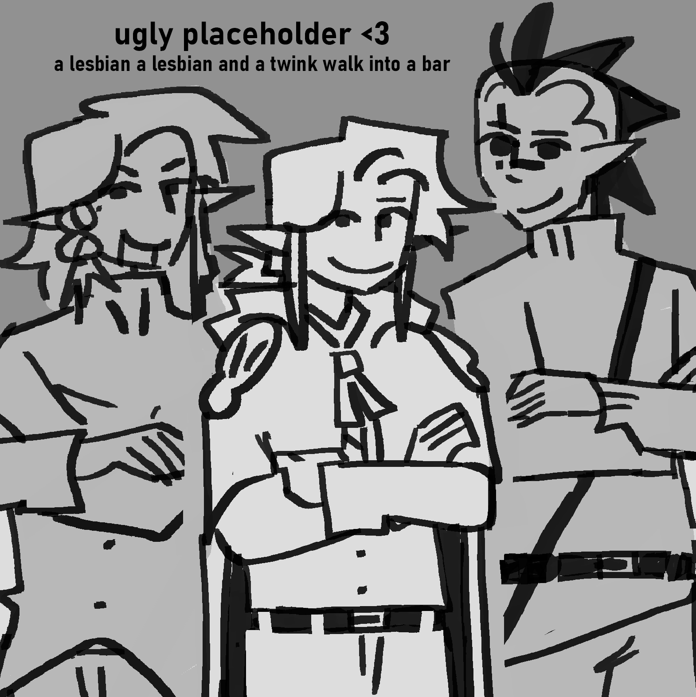

Hiiii hello!! This site is still very under development so if you happen to stumble onto here please give it a second lol. I am trying to populate with content before i style it!!
This is a website designed to compile all of my original character content for LVSN (temporarily titled Ellie Harris vs the Vampires), from plot relevant information, to art archives, to paper crafts!
LVSN is my narrative story primarily about three vampire hunters and how their journey's have
led them astray:
 Ellie Harris, the story's primarily protagonist, Elliot Harris, her brother who's ambition led him down the path of
vampirism, and Noelle Bergund, her teammate who's
optimism*[not the right word!! at all but im blanking] made her a
perfect
victim for the evils of the forest.
Vampires and vampire hunters live in strict opposition, with vampires following a slightly non-traditional definition. Canin is a town comprised primarily of vampire hunters, however in turn they are surrounded my a large vampire population. In order to keep their town's growth strong they take in lots of orphans or family's with strange pasts and urge them to aid in the fight. Ellie Harris is one of these orphans, with her hometown and family being torn apart after her brother's turning, and takes on vampires with her teammates, Noelle and AJ, and coach, [she doesn't have a name yet lol].